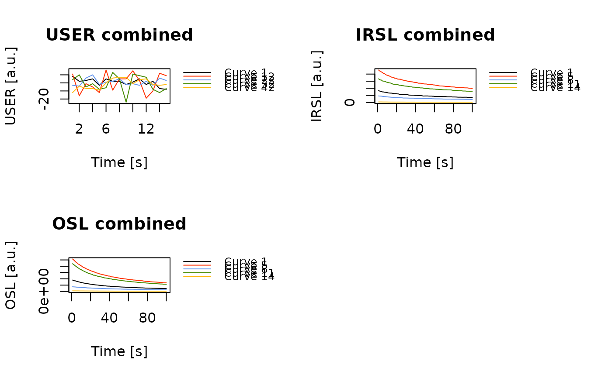

The function analyses CW-OSL curve data produced by a SUERC portable OSL reader and produces a combined plot of OSL/IRSL signal intensities, OSL/IRSL depletion ratios and the IRSL/OSL ratio.
Usage
analyse_portableOSL(
object,
signal.integral = NULL,
invert = FALSE,
normalise = FALSE,
mode = "profile",
coord = NULL,
plot = TRUE,
...
)Arguments
- object
RLum.Analysis (required): object produced by read_PSL2R. The input can be a list of such objects, in which case each input is treated as a separate sample and the results are merged.
- signal.integral
numeric (required): A vector specifying the range of channels used to calculate the OSL/IRSL signal. It can be provided as a vector of length 2 such as
c(1, 5), or as a sequence such as1:5, in which case the lowest and highest values define the range.- invert
logical (with default):
TRUEflip the plot the data in reverse order.- normalise
logical (with default): whether the OSL/IRSL signals should be normalised to the mean of all corresponding data curves.
- mode
character (with default): analysis mode, one of
"profile"(the default) or"surface"for surface interpolation.- coord
list matrix (optional): a list or a 2-column matrix with the x and y coordinates for the sampling positions in meters (m), of the same length as the number of samples measured. For example, the coordinates for one sample could be
coord = list(samp1 = c(0.1, 0.2). If the x coordinates were not measured, x should be set to 0. Note that, in such case, a surface plot cannot be produced.- plot
logical (with default): enable/disable the plot output.
- ...
other parameters to be passed to modify the plot output. Supported are
runto provide the run name (if the input is alist, this is set automatically). Further plot parameters accepted aremain,col,xlim(a named list for profile mode),ylim,ylab,xlab. Additional parameters formode = "profile"aretype,pch,grid(TRUE/FALSE),bg_img(a raster object for the background image, usually a profile photo),bg_img_positions(a vector with the four corner positions, see graphics::rasterImage),zlab(here x-axis labelling). Additional parameters formode = "surface"aresurface_value(character with names of the surfaces to plot),col_ramp,legend(TRUE/FALSE),contour(TRUE/FALSE),,contour_col, ' zlim.
Value
Returns an S4 RLum.Results object with the following elements:
$data.. $summary: data.frame with the results.. $data: list with the RLum.Analysis objects.. $args: list the input arguments
Details
This function only works with RLum.Analysis objects produced by read_PSL2R.
It further assumes (or rather requires) an equal amount of OSL and IRSL curves that
are pairwise combined for calculating the IRSL/OSL ratio.
For calculating the depletion ratios, the cumulative signal of the last n
channels (same number of channels as specified by signal.integral) is
divided by cumulative signal of the first n channels (signal.integral).
Note: The function assumes the following sequence pattern:
DARK COUNT, IRSL, DARK COUNT, BSL, DARK COUNT. Therefore, the
total number of curves in the input object must be a multiple of 5, and
there must be 3 DARK_COUNT records for each IRSL/BSL pair. If you have used
a different sequence, the function will produce an error.
Signal processing
The function processes the signals as follows: BSL and IRSL signals are extracted using the
chosen signal integral, dark counts are taken in full.
Working with coordinates Usually samples are taken from a profile with a certain stratigraphy. In the past the function calculated an index. With this newer version, you have two option of passing on xy-coordinates to the function:
(1) Add coordinates to the sample name during measurement. The form is rather strict and has to follow the scheme
_x:<number>|y:<number>. Example:sample_x:0.2|y:0.4.(2) Alternatively, you can provide a list or matrix with the (x, y) coordinates of each sample in meters (m) using the
coordargument: Example:coord = list(c(0.2, 1), c(0.3,1.2))
If in your profile the x-coordinates were not measured, x should be set to 0. Note that, in such case, a surface plot cannot be produced.
Author
Christoph Burow, University of Cologne (Germany)
Sebastian Kreutzer, Institute of Geography, Heidelberg University (Germany)
Marco Colombo, Institute of Geography, Heidelberg University (Germany)
, RLum Developer Team
How to cite
Burow, C., Kreutzer, S., Colombo, M., 2025. analyse_portableOSL(): Analyse portable CW-OSL measurements. Function version 0.1.3. In: Kreutzer, S., Burow, C., Dietze, M., Fuchs, M.C., Schmidt, C., Fischer, M., Friedrich, J., Mercier, N., Philippe, A., Riedesel, S., Autzen, M., Mittelstrass, D., Gray, H.J., Galharret, J., Colombo, M., Steinbuch, L., Boer, A.d., 2025. Luminescence: Comprehensive Luminescence Dating Data Analysis. R package version 1.1.0. https://r-lum.github.io/Luminescence/
Examples
## example profile plot
# (1) load example data set
data("ExampleData.portableOSL", envir = environment())
# (2) merge and plot all RLum.Analysis objects
merged <- merge_RLum(ExampleData.portableOSL)
plot_RLum(
object = merged,
combine = TRUE,
records_max = 5,
legend.pos = "outside")

merged
#>
#> [RLum.Analysis-class]
#> originator: merge_RLum.Analysis()
#> protocol: portable OSL
#> additional info elements: 196
#> number of records: 70
#> .. : RLum.Data.Curve : 70
#> .. .. : #1 USER | #2 IRSL | #3 USER | #4 OSL | #5 USER | #6 USER | #7 IRSL
#> .. .. : #8 USER | #9 OSL | #10 USER | #11 USER | #12 IRSL | #13 USER | #14 OSL
#> .. .. : #15 USER | #16 USER | #17 IRSL | #18 USER | #19 OSL | #20 USER | #21 USER
#> .. .. : #22 IRSL | #23 USER | #24 OSL | #25 USER | #26 USER | #27 IRSL | #28 USER
#> .. .. : #29 OSL | #30 USER | #31 USER | #32 IRSL | #33 USER | #34 OSL | #35 USER
#> .. .. : #36 USER | #37 IRSL | #38 USER | #39 OSL | #40 USER | #41 USER | #42 IRSL
#> .. .. : #43 USER | #44 OSL | #45 USER | #46 USER | #47 IRSL | #48 USER | #49 OSL
#> .. .. : #50 USER | #51 USER | #52 IRSL | #53 USER | #54 OSL | #55 USER | #56 USER
#> .. .. : #57 IRSL | #58 USER | #59 OSL | #60 USER | #61 USER | #62 IRSL | #63 USER
#> .. .. : #64 OSL | #65 USER | #66 USER | #67 IRSL | #68 USER | #69 OSL | #70 USER
# (3) analyse and plot
results <- analyse_portableOSL(
merged,
signal.integral = 1:5,
invert = FALSE,
normalise = TRUE)
 get_RLum(results)
#> ID RUN BSL BSL_error IRSL IRSL_error BSL_depletion
#> 1 1 ALU 0.66751034 0.0016178539 0.69677206 0.0035040643 0.8675537
#> 2 2 ALU 1.33608934 0.0022884430 1.43034913 0.0050268167 0.8811300
#> 3 3 ALU 0.35999022 0.0011869945 0.45413426 0.0028330832 1.1992200
#> 4 4 ALU 0.39980864 0.0012483733 0.42331051 0.0027004844 1.0490701
#> 5 5 ALU 1.91016028 0.0027332907 1.93584455 0.0058476153 0.9097980
#> 6 6 ALU 1.87047105 0.0027051257 1.83712738 0.0056976151 0.9659504
#> 7 7 ALU 1.10402143 0.0020801568 0.95869456 0.0041114642 0.9922993
#> 8 8 ALU 0.27824348 0.0010434799 0.39608610 0.0026434540 1.1796670
#> 9 9 ALU 2.09649886 0.0028644330 2.08440551 0.0060688839 0.9090499
#> 10 10 ALU 2.12595947 0.0028889095 2.17793540 0.0062025491 0.9572100
#> 11 11 ALU 1.63105170 0.0025284109 1.40432450 0.0049269556 0.8899796
#> 12 12 ALU 0.10425127 0.0006390972 0.10266938 0.0013732741 1.1011572
#> 13 13 ALU 0.08261577 0.0005690871 0.06579380 0.0010890682 1.0486319
#> 14 14 ALU 0.03332815 0.0003606878 0.03255285 0.0007974928 1.0492829
#> IRSL_depletion IRSL_BSL_RATIO DARK DARK_error COORD_X COORD_Y
#> 1 0.9158216 1.0438371 1.1111111 8.568500 0 1
#> 2 0.9087895 1.0705490 -0.8222222 12.384537 0 2
#> 3 1.0233685 1.2615183 -0.2444444 8.931954 0 3
#> 4 1.0190504 1.0587828 -0.1555556 8.355607 0 4
#> 5 0.9352608 1.0134461 -7.5333333 39.122535 0 5
#> 6 0.9506562 0.9821737 0.5111111 14.822621 0 6
#> 7 1.0143051 0.8683659 -2.8888889 11.954882 0 7
#> 8 0.9835481 1.4235234 0.5333333 7.322444 0 8
#> 9 0.9673997 0.9942316 -2.6444444 11.790126 0 9
#> 10 0.9799674 1.0244482 1.4000000 12.498000 0 10
#> 11 1.0160485 0.8609933 0.2666667 11.993180 0 11
#> 12 1.0718821 0.9848262 -6.4222222 38.856665 0 12
#> 13 1.1398779 0.7963831 1.0222222 6.471929 0 13
#> 14 1.0740241 0.9767372 -1.0666667 4.750120 0 14
get_RLum(results)
#> ID RUN BSL BSL_error IRSL IRSL_error BSL_depletion
#> 1 1 ALU 0.66751034 0.0016178539 0.69677206 0.0035040643 0.8675537
#> 2 2 ALU 1.33608934 0.0022884430 1.43034913 0.0050268167 0.8811300
#> 3 3 ALU 0.35999022 0.0011869945 0.45413426 0.0028330832 1.1992200
#> 4 4 ALU 0.39980864 0.0012483733 0.42331051 0.0027004844 1.0490701
#> 5 5 ALU 1.91016028 0.0027332907 1.93584455 0.0058476153 0.9097980
#> 6 6 ALU 1.87047105 0.0027051257 1.83712738 0.0056976151 0.9659504
#> 7 7 ALU 1.10402143 0.0020801568 0.95869456 0.0041114642 0.9922993
#> 8 8 ALU 0.27824348 0.0010434799 0.39608610 0.0026434540 1.1796670
#> 9 9 ALU 2.09649886 0.0028644330 2.08440551 0.0060688839 0.9090499
#> 10 10 ALU 2.12595947 0.0028889095 2.17793540 0.0062025491 0.9572100
#> 11 11 ALU 1.63105170 0.0025284109 1.40432450 0.0049269556 0.8899796
#> 12 12 ALU 0.10425127 0.0006390972 0.10266938 0.0013732741 1.1011572
#> 13 13 ALU 0.08261577 0.0005690871 0.06579380 0.0010890682 1.0486319
#> 14 14 ALU 0.03332815 0.0003606878 0.03255285 0.0007974928 1.0492829
#> IRSL_depletion IRSL_BSL_RATIO DARK DARK_error COORD_X COORD_Y
#> 1 0.9158216 1.0438371 1.1111111 8.568500 0 1
#> 2 0.9087895 1.0705490 -0.8222222 12.384537 0 2
#> 3 1.0233685 1.2615183 -0.2444444 8.931954 0 3
#> 4 1.0190504 1.0587828 -0.1555556 8.355607 0 4
#> 5 0.9352608 1.0134461 -7.5333333 39.122535 0 5
#> 6 0.9506562 0.9821737 0.5111111 14.822621 0 6
#> 7 1.0143051 0.8683659 -2.8888889 11.954882 0 7
#> 8 0.9835481 1.4235234 0.5333333 7.322444 0 8
#> 9 0.9673997 0.9942316 -2.6444444 11.790126 0 9
#> 10 0.9799674 1.0244482 1.4000000 12.498000 0 10
#> 11 1.0160485 0.8609933 0.2666667 11.993180 0 11
#> 12 1.0718821 0.9848262 -6.4222222 38.856665 0 12
#> 13 1.1398779 0.7963831 1.0222222 6.471929 0 13
#> 14 1.0740241 0.9767372 -1.0666667 4.750120 0 14